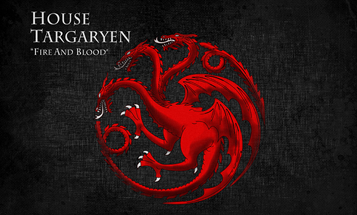
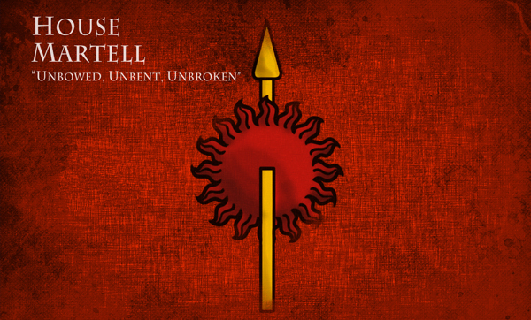
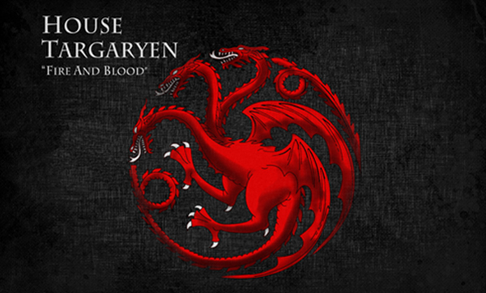
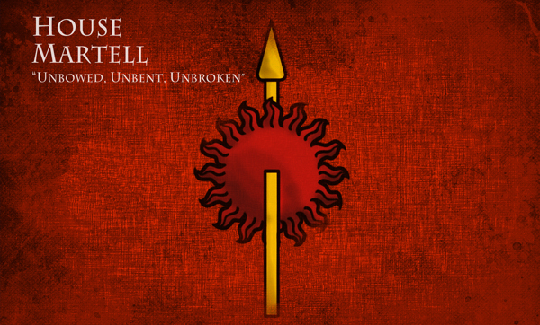

WINTER IS COMING
House Stark of Winterfell is a Great House of Westeros, ruling over the vast region known as the North from their seat in Winterfell. It is one of the oldest lines of Westerosi nobility by far, claiming a line of descent stretching back over eight thousand years. Before the Targaryen conquest, as well as during the War of the Five Kings and Daenerys Targaryen's invasion of Westeros, the leaders of House Stark ruled over the region as the Kings in the North.